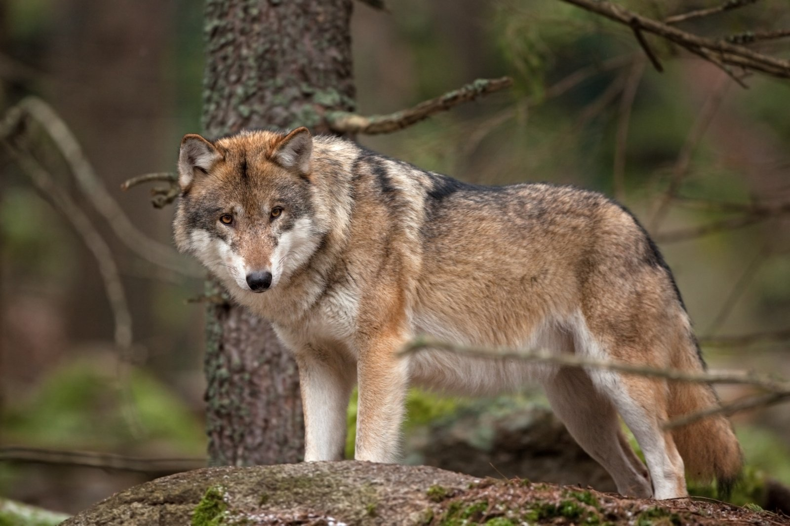

<!DOCTYPE html>
<html lang="en">
<head>
    <meta charset="UTF-8">
    <meta http-equiv="X-UA-Compatible" content="IE=edge">
    <meta name="viewport" content="width=device-width, initial-scale=1.0">
    <title>Document</title>
</head>
<body>
    
</body>
</html>
<h1> ВОЛК </h1>
    <br/> <p>Волк, или се́рый волк, или обыкнове́нный волк[1] (лат. Canis lupus), — вид хищных млекопитающих из семейства псовых (Canidae). Наряду с койотом (Canis latrans), обыкновенным шакалом (Canis aureus) и ещё несколькими видами составляет род волков (Canis). Кроме того, как показывают результаты изучения последовательности ДНК и дрейфа генов, является прямым предком домашней собаки (Canis familiaris; иногда классифицируется как подвид волка, Canis lupus familiaris). Волк — одно из самых крупных современных животных в своём семействе: длина его тела (без учёта хвоста) может достигать 160 см, длина хвоста — до 52 см, высота в холке — до 90 см; масса тела может доходить до 90—102 кг.
          </p>
<br/> 
<a href="https://ru.wikipedia.org/wiki/Волк"> 
Волк
</a>